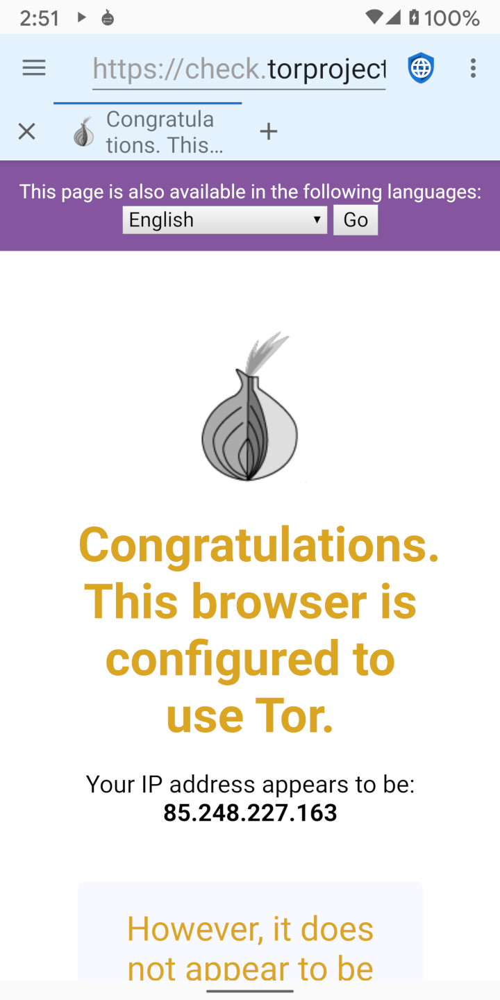

Existem duas categorias gerais de agentes mal-intencionados que desejam violar a privacidade da web: governos maliciosos com acesso a ISPs (Provedores de Serviços de Internet) e megacorporações que administram redes sociais e de publicidade. Proxies como TOR (The Onion Router) e I2P (Invisible Internet Project) são úteis para proteger a privacidade de governos maliciosos (que espionam o tráfego em trânsito) mas não de megacorporações (que incorporam código malicioso em servidores da web).
Governos mal-intencionados freqüentemente espionam seus cidadãos para punir dissidentes ou atividades de direitos humanos. Eles geralmente operam os ISPs locais ou podem forçá-los a divulgar informações mostrando todos os endereços IP visitados por cada usuário. Proxies em camadas são projetados para derrotar essa violação de privacidade criptografando o tráfego do dispositivo de um usuário e roteando-o por meio de vários servidores na Internet antes de enviá-lo para o destino final. Isso significa que nenhum ISP, servidor ou site individual pode saber o endereço IP do dispositivo do usuário e o endereço IP do servidor web final. Governos mal-intencionados e os ISPs que eles controlam não podem dizer quais servidores da web um usuário está acessando, embora possam dizer que o usuário está usando um serviço de proxy em camadas. Em algumas partes do mundo, o uso de proxies pode ser interpretado como uma evidência de comportamento ilegal (“Se você não tivesse nada a esconder, não estaria criptografando seu tráfego”) e os usuários podem ser punidos porque os governos presumem que eles estão fazendo algo que é proibido. Assim, os proxies podem ser úteis, mas não são uma panacéia.
Quando um usuário se conecta a um servidor web, o servidor web pode ver o endereço IP do usuário. Embora não seja uma ciência perfeita, os endereços IP podem ser transformados em endereços físicos com uma quantidade razoável de precisão. Os pequenos servidores da web geralmente dependem de endereços IP para identificar a localização dos usuários que visitam seu site. Os proxies são uma boa solução para mascarar a localização do usuário desses servidores. Mas as grandes megacorporações que possuem mídia social e redes de publicidade usam todo um perfil de informações que é projetado para rastrear usuários em dispositivos e endereços IP. Esses perfis empregam uma variedade de técnicas para identificar usuários, incluindo JavaScript, cookies, IDs de rastreamento e impressão digital do navegador. Como a grande maioria dos sites na Internet carrega um anúncio de uma das principais redes ou incorpora ícones de mídia social com seu JavaScript associado, essas empresas criaram perfis para quase todos os usuários on-line e podem rastrear suas atividades na Internet em sites não relacionados.
Eles rastreiam cada site visitado, tudo o que é comprado, cada cartão de crédito usado para fazer uma compra, cada endereço para onde os itens são enviados, e os metadados de GPS de cada imagem enviada para a Internet. Eles constroem um perfil de idade, sexo, estado civil, endereço, afiliações políticas, afiliações religiosas, circunstâncias familiares, número de animais de estimação do usuário, e tudo o mais que eles possam ter em suas mãos. Eles até compram bancos de dados de transações de cartão de crédito em lojas locais, para que possam rastrear os padrões de compra off-line dos usuários em seus perfis. Como eles já têm informações de endereço muito mais precisas sobre um usuário do que as divulgadas por um endereço IP, os proxies não oferecem proteção real à privacidade contra megacorporações.
A melhor proteção de privacidade contra megacorporações é navegar na web com o JavaScript desabilitado, seguido pelo bloqueio de redes de anúncios, desabilitando cookies e armazenamento DOM, e usando um navegador de difícil impressão digital.
Apesar de suas limitações, os proxies podem ser úteis em algumas circunstâncias. Tor e I2P têm aplicativos Android que facilitam o uso de suas redes proxy. Quando o proxy está ativado no Navegador de privacidade, a barra de aplicativos terá um fundo azul claro em vez do cinza claro padrão. Como o tráfego está sendo roteado por vários nós de proxy, usar um proxy em camadas costuma ser muito mais lento do que conectar-se diretamente à Internet.
